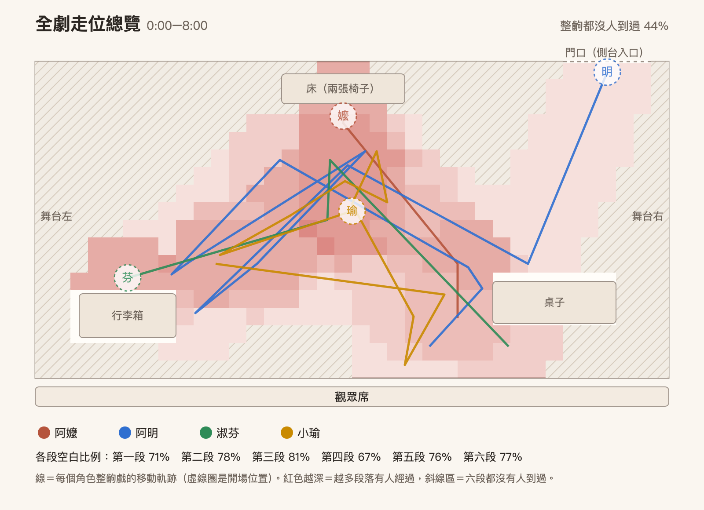
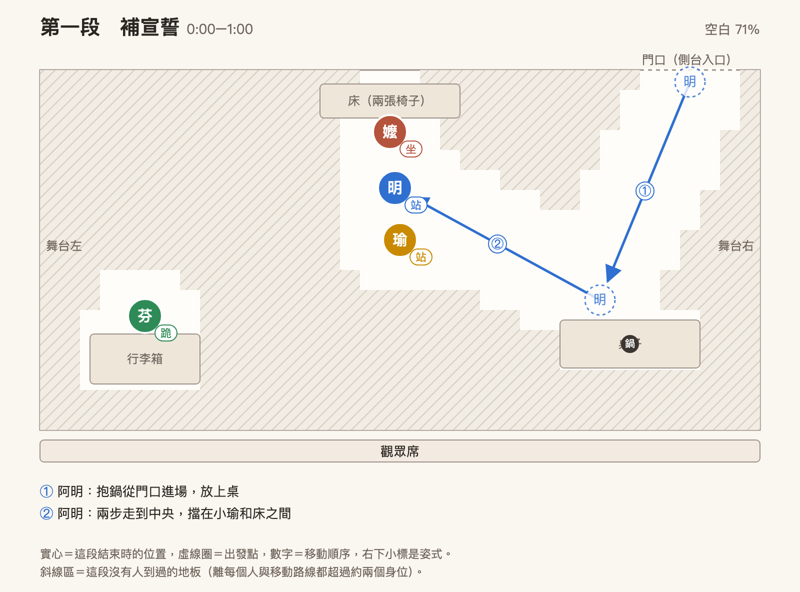
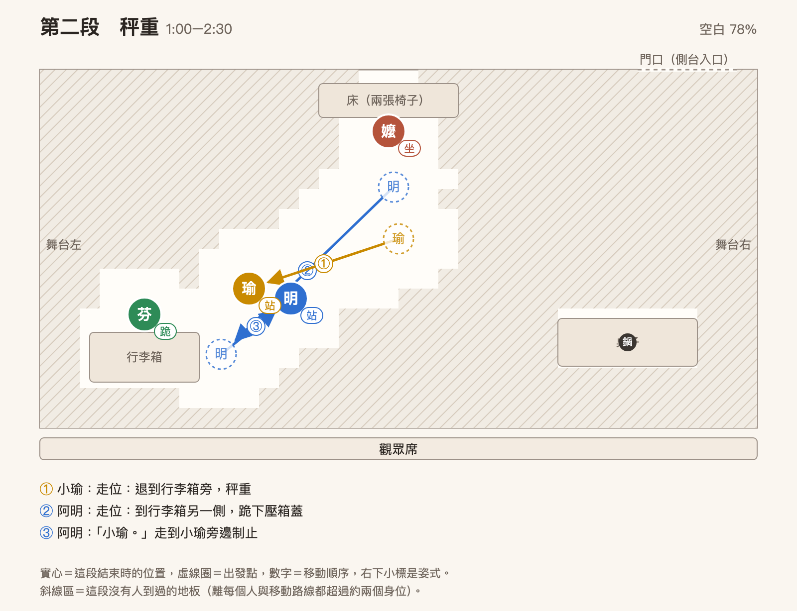
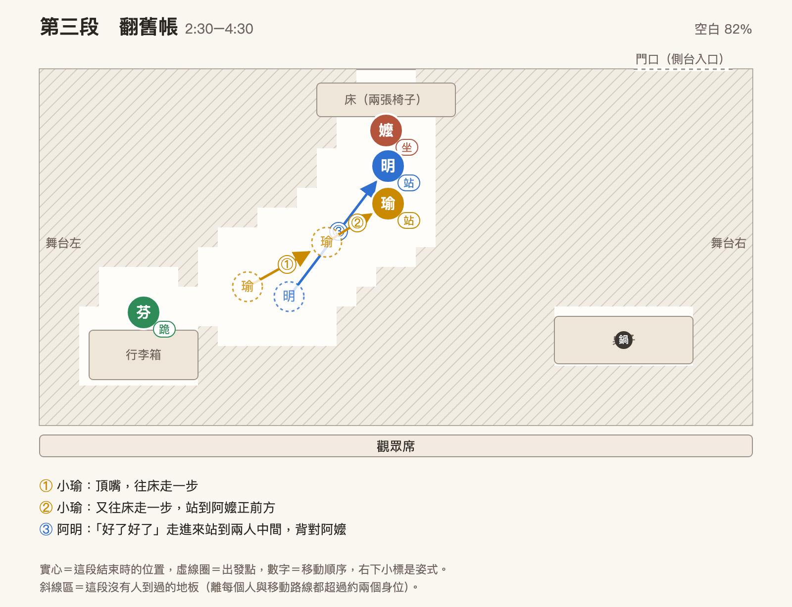
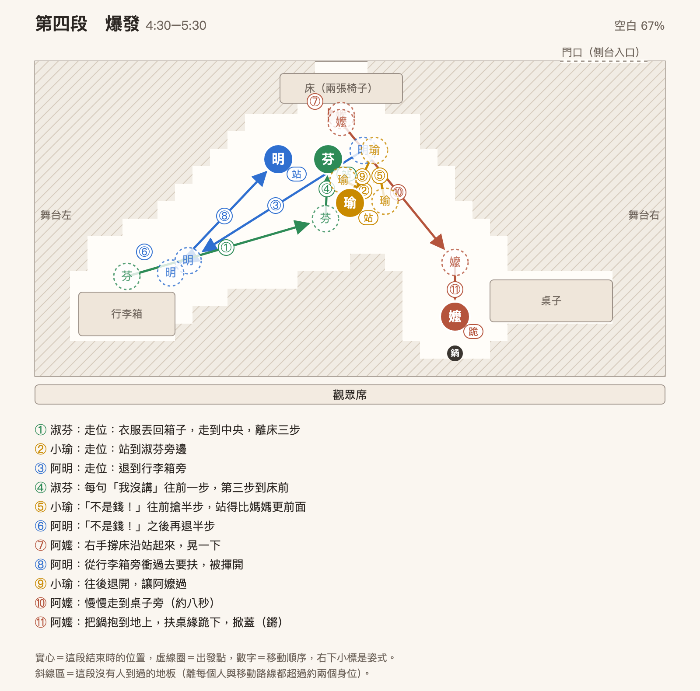
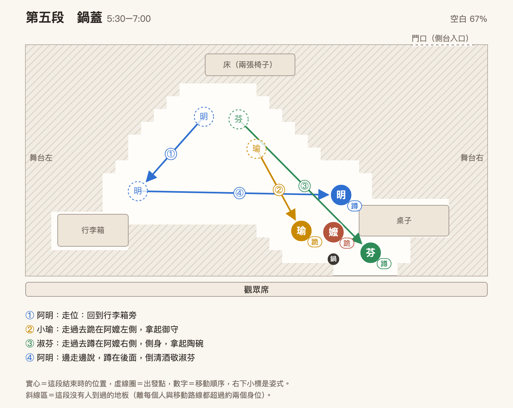
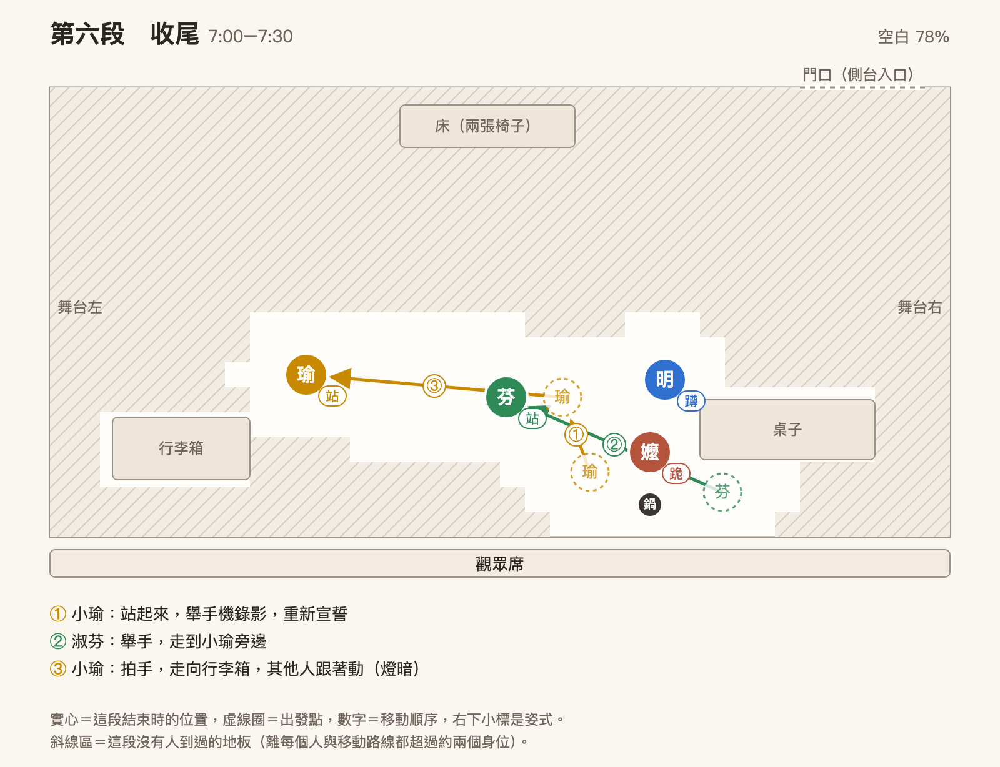

家族旅遊短劇：早知道就出門了
劇組介紹
劇名：早知道就出門了
成員：凱莉、雅典娜、冠豪、鈺庭
阿明的媽媽，第一次出國，不會說好聽話，只想著省錢。
阿嬤的兒子，媽媽跟老婆兩邊都不敢得罪，夾在中間負責打圓場，只敢默默犧牲。
有自己的想法，怕婆婆生氣、讓老公為難，以大局為重的媳婦，但忍耐到最後大爆發。
阿嬤的孫女，對行程最了解，很興奮帶領家人出遊，覺得長輩只會嫌。
台詞本下載
每個角色一份完整劇本，自己的台詞加粗並畫底線，開口前對方的最後一句只加粗當接話提示，（ ）裡的動作不畫線、不用唸。每段標題旁附該段走位圖，自己的路線深色、其他人淡化；情緒只列自己的，不印演法。A4 直式，直接列印即可。
改編說明
整齣戲收成一個地點：日本飯店房間，旅程最後一晚，全家在收行李。原本五幕散在老街口、老街、小吃攤、飯店的衝突，全部在「行李超重、要丟誰的東西」這一件事上重新引爆，不用換景、不用搬道具。
改編保留原劇本的核心：阿嬤整趟都在嫌，但大家想要的東西她早就偷偷買好了。改動的地方有三個。
- 「不要吵架的宣誓」移到開場，由小瑜發起，阿嬤是唯一沒舉手的人，這個缺口在結尾補上。
- 老街的「不讓買」、小吃攤的「嫌貴」、扛鍋扭傷，都改成在房間裡被大家翻舊帳講出來，衝突用回憶推進，不用演出來。
- 阿嬤拿出禮物的時機放在最後，而且禮物就藏在那個讓行李超重的鑄鐵鍋裡，讓「超重」本身就是愛的證據。
| 項目 | 設定 |
|---|---|
| 片長 | 約 8 分（台詞約 1,600 字，加上走位停頓） |
| 地點 | 日本飯店雙人房，回國前一晚 |
| 時間 | 晚上九點多 |
| 秘密 | 阿嬤偷偷買了一個鑄鐵鍋，只有阿明知道。開場阿明把鍋子放上桌時，淑芬忙著收行李、小瑜忙著滑手機，都沒注意到，要到第二段阿嬤自己提起才發現 |
| 演員 | 凱莉（阿嬤金花）、雅典娜（媽媽淑芬）、冠豪（爸爸阿明）、鈺庭（孫女小瑜） |
| 道具 | 現場提供一張桌子、兩張椅子：兩張椅子併排當床，桌子當飯店書桌、鑄鐵鍋放在上面。其他自備道具見〈服裝與道具〉 |
核心宗旨
不同世代之間愛的表達方式需要用心感受與聆聽：是拒絕，還是不會說出口的愛？
角色設定
每個角色只有一個核心動機，所有台詞和動作都從這個動機長出來。演員卡住的時候，回頭看「他現在最怕什麼」。
| 角色 | 個性 | 核心動機（他最怕的事） | 身體語彙 | 口頭禪 |
|---|---|---|---|---|
| 阿嬤 金花 （70 歲） | 殼硬、嘴硬、看到價錢就頭痛；不會講好聽話，會做事 | 怕自己是兒子家的負擔。第一次出國，什麼都不懂，用「嫌」掩飾不安 | 坐為主。左手腕扭傷，坐在床沿指揮全場，拒絕被扶；最後自己跪下去掀鍋蓋，收尾時第一次讓阿明扶起來 | 「這個不用。」「我自己會。」 |
| 爸爸 阿明 （45 歲） | 和事佬，誰都不敢得罪，只會默默犧牲 | 怕這趟旅行在最後一晚破局。他要的只是「平安回家」 | 一直在移動。永遠在搬東西、永遠站在兩個人中間，身體就是他的和事工具 | 「好了好了。」「我來我來。」 |
| 媽媽 淑芬 （43 歲） | 有主見、會規劃、顧大局；忍功一流，但忍到底會爆 | 怕被看成「不好的媳婦」，也怕讓老公為難。她要的是被當成這個家的一份子 | 跪為主。跪在行李箱前整理，整理行李是她唯一能控制的事；爆發時站起來 | 「媽，沒關係。」（前半段） 「我有說話嗎？」（爆發後） |
| 孫女 小瑜 （20 歲） | 熱情、性急、直接；行程全是她查的 | 怕自己查了三個月的心血沒人看見。她要的是一句「妳安排得很好」 | 站為主。全場最會動的人，手機不離手；結尾跪到阿嬤身邊 | 「我查過了！」「妳從第一天嫌到現在！」 |
四個人的姿式分配是刻意的：阿嬤坐、淑芬跪、小瑜站、阿明一直在移動。誰改變姿式，就是誰的關係在變。
關係與衝突
兩條衝突線都從阿嬤出發，阿明三條線都連著，所以他一動全場就動。淑芬和小瑜的同盟只在第四段出現，第五段又各自被阿嬤拉走。
| 關係線 | 衝突是什麼 | 在劇中怎麼演 | 怎麼解 |
|---|---|---|---|
| 阿嬤與小瑜（祖孫） | 「妳什麼都嫌」對「我又沒嫌」 | 第三段小瑜一步步逼近床，阿嬤坐著不動 | 第五段小瑜跪到阿嬤旁邊，拿到御守 |
| 阿嬤與淑芬（婆媳） | 媳婦忍了一整趟，婆婆不覺得自己有錯 | 第二段鍋子被翻出來，第四段淑芬一口氣講完 | 第五段的陶碗，「看你那麼喜歡回去看了一兩次，幫你偷偷買了啦」 |
| 阿明與淑芬（夫妻） | 「你每次都好了好了」 | 第二段「你知道？」，第三段淑芬第一次把矛頭轉向老公 | 第四段阿明退半步、不再擋 |
| 阿明與阿嬤（母子） | 兒子不敢讓媽媽難堪 | 阿明幫她瞞著鍋子，也永遠在搬她的鍋 | 第五段「媽，妳還是在乎我們的嘛」 |
| 阿明與小瑜（父女） | 爸爸只會制止，不會站她那邊 | 第二段「小瑜。」 | 第六段小瑜重新宣誓，阿明第一個舉手 |
| 淑芬與小瑜（母女） | 沒有衝突，是同盟 | 第四段並肩站在阿嬤面前 | 阿嬤一人分別收服 |
舞台與走位
舞台左右以觀眾面向舞台為準，觀眾的左手邊就是舞台左。五個分區各有一個主人，誰離開自己的區走進別人的區，就是關係在動。
| 分區 | 道具 | 開場時誰在這裡、什麼姿式 | 這一區在劇中的意義 |
|---|---|---|---|
| 床 | 兩張椅子併排（現場提供） | 阿嬤，坐在床沿，綁繃帶的左手擱在腿上 | 阿嬤的堡壘。前四段她都不離開，第四段站起來離開床就是轉折 |
| 行李箱 | 攤開的行李箱、幾件衣服、行李秤 | 淑芬，跪 | 淑芬的控制感。她站起來離開箱子就是要開口了 |
| 門口 | 無，用側台入口 | 阿明從這裡抱鍋進場 | 阿明的進出口，之後他不再回來，一直在人與人中間 |
| 桌子 | 桌子（現場提供），阿明進場後把鑄鐵鍋放上桌，鍋裡藏著御守、陶碗、小瓶清酒 | 沒人。鍋子由阿明抱進來放上桌，淑芬和小瑜都沒注意到 | 全劇的謎底。第五段四個人在這裡第一次聚在一起 |
| 中央 | 空地 | 小瑜，站，拿手機 | 衝突區。誰站進來就是誰要開戰 |
下面是每一段的走位圖：虛線圈是出發點，箭頭上的數字是移動順序，實心圈是這段結束時的位置，右下角小字是姿式。斜線區是那一段沒有人走到的地板，可以用來看空間怎麼流動、哪裡一直空著。







服裝與道具
現場只用一張桌子、兩張椅子，其他全部可以從家裡帶。每個人一個主色，讓觀眾第一眼就分得出誰是誰：阿嬤紅、阿明藍、淑芬米白、小瑜黃。
穿著
| 角色（演員） | 主色 | 穿著 | 關鍵配件 | 為什麼這樣穿 |
|---|---|---|---|---|
| 阿嬤 金花 （凱莉） | 紅 | 紅色或碎花上衣、深色寬鬆長褲、薄背心，布鞋或拖鞋 | 左手腕繃帶、腰包、老花眼鏡掛脖子；可加髮網或灰白噴髮 | 腰包裝錢是她「什麼都要算」的象徵。繃帶要從第一段就讓觀眾看見，第四段她護著左手抱鍋才有前因 |
| 爸爸 阿明 （冠豪） | 藍 | 藍或灰色 Polo 衫紮進卡其褲、皮帶、襪子配室內拖鞋 | 毛巾掛脖子 | 毛巾＝整晚都在搬東西流汗。紮衣服、繫皮帶是老實爸爸的樣子 |
| 媽媽 淑芬 （雅典娜） | 米白 | 米白或大地色居家上衣、長褲，袖子捲起來 | 鯊魚夾把頭髮夾起來 | 捲袖子、夾頭髮＝正在做事的人。跪著整理行李時動作不會被衣服卡住 |
| 孫女 小瑜 （鈺庭） | 黃 | 黃色寬版 T 恤、牛仔褲或運動褲、球鞋 | 手機（殼要顯眼）、髮箍或棒球帽 | 年輕、好動、全場站著最多的人。手機是她查了三個月行程的證據，整場不離手 |
道具清單
| 道具 | 數量 | 誰用、什麼時候用 | 怎麼準備 | 負責 |
|---|---|---|---|---|
| 桌子 | 1 | 飯店書桌，鑄鐵鍋放在上面；第四段阿嬤扶桌緣跪下 | 現場提供，放舞台右前 | 現場 |
| 椅子 | 2 | 併排當床，阿嬤坐在上面 | 現場提供，放舞台中後 | 現場 |
| 行李箱 | 1 | 開場就攤開在舞台左前，淑芬跪著整理；第二段阿明壓箱蓋、小瑜秤重 | 中型以上，空箱就好 | 凱莉 |
| 衣服 | 3–4 件 | 淑芬開場在摺 | 放行李箱裡，T 恤最好摺 | 各自穿著 |
| 行李秤 | 1 | 第二段小瑜勾上行李箱秤重 | 手提式行李秤；沒有就用任何有勾子的東西，小瑜看秤的表情演出來就好 | 雅典娜或凱莉 |
| 鑄鐵鍋 | 1 | 第一段阿明抱進場放上桌，淑芬和小瑜沒注意到；第二段阿嬤提起；第四段阿嬤抱到地上掀開；第六段阿明抱起來帶走 | 家裡有蓋子的湯鍋，黑色或深色最像鑄鐵，要大到放得下小碗，蓋子要金屬的，第四段掀開時要有「鏘」一聲。不要用真的鑄鐵鍋，太重、掉了會砸到腳。鍋裡由上往下放御守、陶碗、清酒，再蓋上蓋子 | 凱莉 |
| 御守 | 1 | 第五段給小瑜 | 紅色小布袋綁繩子；有真的御守最好 | 鈺庭 |
| 小陶碗 | 1 | 第五段給淑芬 | 用塑膠碗或木碗代替，避免演出時摔破 | 冠豪 |
| 小瓶清酒 | 1 | 第五段給阿明 | 小玻璃瓶或小寶特瓶，貼日文酒標，不用裝東西 | 鈺庭 |
| 手機 | 1 | 小瑜全場拿著 | 鈺庭自己的手機，演出時開飛航模式 | 鈺庭 |
| 繃帶 | 1 | 阿嬤左手腕，全場 | 彈性繃帶，綁在左手腕，露在袖子外面 | 凱莉 |
| 毛巾 | 1 | 阿明掛脖子，全場 | 白色或素色毛巾 | 冠豪 |
行李秤由雅典娜或凱莉帶，兩人確定後再更新。
完整劇本
每段開頭的「走位」是這段的起始位置，台詞中的（ ）是當下的動作，「情緒」是四個角色在這段的情緒起點與轉折，每段結尾的「演法」是給演員的表演提示。
第一段 補宣誓 0:00–1:00
- 阿嬤置身事外的平淡。不覺得自己有問題，被小瑜點名時只有一點不耐煩。
- 阿明累，只想讓這一晚平安過去。放鍋子時心虛，見苗頭不對就趕快打圓場。
- 淑芬疲憊，專心收行李。「結果第二天就破功」帶一點酸。
- 小瑜興奮、充滿期待，真心相信宣誓有用；阿嬤不舉手時轉成不服氣。
小瑜（舉起手機）最後一晚！明天早上八點的車，六點半要起床，去機場的路線我存好了。（轉身看三個人）所以，在睡覺之前，我們來宣誓。
阿明（直起腰）又宣誓？
小瑜出發那天在老街口不是宣誓過「全程不吵架」？結果呢？
淑芬（頭沒抬，繼續摺）結果第二天就破功。
小瑜所以今天補。明天回家路上，不、吵、架。舉手！
（小瑜舉手。阿明立刻舉手。淑芬停了一下，手裡還拿著衣服，舉。阿嬤坐著不動，看向窗外的方向。）
小瑜阿嬤。
阿嬤我又沒吵。
小瑜妳——
阿明（兩步走到中央，擋在小瑜和床之間）好了好了，阿嬤手腕受傷，在休息。來，收行李，收完睡覺。
第二段 秤重 1:00–2:30
- 阿嬤理所當然，完全不覺得提起鍋子有什麼問題；被反對時轉為固執。
- 阿明從使力壓箱子，到聽見「鍋子」時心虛僵住，最後是夾在中間的無奈。
- 淑芬緊張，鬆一口氣，接著是發現老公瞞著她的錯愕，最後硬把情緒壓下來擠出笑。
- 小瑜盯著秤的緊張，變成「剛剛好」的得意，再變成看到鍋子的錯愕與不滿。
淑芬（拉行李箱拉鍊，拉不動）阿明，你來壓一下。
阿明（跪下，雙手壓箱蓋，淑芬拉）嘿——咻。
小瑜（手機收進口袋，拿出行李秤勾上去）等一下，我秤一下。
（小瑜用力提起來，盯著秤看，表情看不出結果，再慢慢放下。）
小瑜剛剛好。
阿明剛剛好什麼？
小瑜剛剛好到廉航的上限，一點都不能再多了！
淑芬（鬆一口氣，拍一下箱蓋）好，還有沒有什麼東西沒放進去的嗎？
阿嬤（坐在床上，理所當然）那鍋子呢？
（三個人一起轉頭看阿嬤。阿明還跪在箱子旁，整個人僵住，手慢慢從箱蓋上移開，像被抓包的小偷。）
小瑜什麼鍋子？
阿嬤（用下巴指桌子）桌上那個啊。
（淑芬和小瑜轉頭，第一次看到桌上的鍋子。）
淑芬（頭慢慢轉向阿明）你知道？
阿明（還跪著不敢起來，不敢看她）……媽說先不要講。
淑芬（深吸一口氣，轉回去對阿嬤擠出笑）媽，沒關係。我們看一下哪些可以不帶。
阿嬤鍋子不能不帶。
淑芬可是箱子已經滿了……
阿嬤這鍋好。鑄鐵的，滷肉最香。不帶回去才是浪費。
小瑜（小聲，但故意讓人聽到）這鍋子才是佔行李最多的好不好！！
阿明（走到小瑜旁邊要制止）小瑜。
第三段 翻舊帳 2:30–4:30
- 阿嬤一開始輕描淡寫，被孫女頂嘴後也動了氣，「白飯才是正常的價錢」是真的生氣。
- 阿明一直在等時機開口，勸架時很疲倦；被淑芬點名時錯愕又尷尬。
- 淑芬本來想讓步，被一句話否定後氣上來，最後把壓著的不滿冷冷地轉向阿明。
- 小瑜從委屈到越講越激動，情緒一句一句往上疊，是這段最大聲的人。
淑芬（把剛拉上的拉鍊又拉開，翻出一件衣服拿在手上）我找找看有什麼可以不用帶
阿嬤（馬上，用下巴指行李箱）好啊，你那個餅乾可以不用，台灣也有。
淑芬（咬住）……媽，那是伴手禮。
阿嬤你們就是這樣，看到什麼都要買。老街那天，小瑜要買那個布娃娃，一個三千塊，摸一摸就好了，買回去也是放著。
小瑜（往床走一步）吼，啊罵，那個是很有名保平安的御守！網路上大家都知道
阿嬤御守一個三千，三千我在市場可以買很多天的菜。
小瑜（又往床走一步，站到阿嬤正前方）阿嬤，妳知道我為了這趟旅程查了多久的資料嗎？（舉高手機晃一下）整整三個月。去哪裏怎麼去我全都查過了。結果呢？妳出發前就說不想來，來了又從第一天嫌到現在！
阿嬤我哪有嫌。
小瑜有啊，「這個不用」、「那個太貴」、「不如你煮的」。小吃攤那碗拉麵妳說一千二太貴，妳自己點了一碗白飯！
阿嬤（也大聲，右手拍一下床沿，坐直）白飯才是正常的價錢！
阿明（先看一眼淑芬，再走進來，站到小瑜和阿嬤中間，背對阿嬤）好了好了，大家都累了。
淑芬（小聲，但每個字都清楚）阿明，你每次都這句。
阿明（轉頭）……蛤？
淑芬「好了好了」。她講我的時候你好了好了，我講她的時候你也好了好了。
第四段 爆發 4:30–5:30
- 阿嬤被兩個人圍著，先愣住，只會用錢回應；說不出話之後，轉為受傷與沮喪。
- 阿明不知所措，第一次不再擋在中間；想保護媽媽，卻被推開。
- 淑芬壓了一整趟的委屈一次說出來，憤怒裡帶著心酸。
- 小瑜跟著媽媽一起爆發，覺得終於說出口；看到阿嬤站起來，氣勢開始軟下來。
淑芬媽，這趟我有講過一句話嗎？老街妳不讓買，（往前一步）我沒講。妳說要自己去逛，阿明要去陪妳，妳說「不用，你自己去」，結果手腕扭傷回來，是誰在半夜照顧你？（再往前一步）我沒講。（第三步站到阿嬤面前，第一次伸手指桌上的鍋子）現在又多一個鍋子，超重要補多少錢，妳知道嗎？
阿嬤（停一拍）……我出。
淑芬不是錢的問題！
小瑜（往前搶半步，站得比媽媽更前面）對，不是錢！是妳從來不覺得我們做的事情有一件是對的！
（阿明看淑芬，又看小瑜，往後退了半步。這次他沒有說「好了」。）
（停頓。阿嬤看著面前兩個人，沒有回嘴。她右手撐著床沿站起來，晃了一下。阿明從行李箱旁衝過去要扶。）
阿明媽，妳休息不要跟他們吵架——
阿嬤（右手揮開，沮喪）不要你扶啦。你們真的是吼。
（阿嬤慢慢走到桌子旁，小瑜往後退開讓她過。三個人轉過整個身體跟著她，不只轉頭。她用右手把鍋子拖到桌邊，左手只敢輕輕托著，抱到地上，扶著桌緣慢慢跪下去，右手按地，掀開鍋蓋，「鏘」一聲。）
第五段 鍋蓋 5:30–7:00
- 阿嬤彆扭、不好意思，不習慣當面對人好；講到鍋子時又恢復嘴硬，那是她表達愛的方式。
- 阿明從驚訝到感動，終於鬆了一口氣。
- 淑芬從錯愕到不敢相信，被婆婆看見的感動。
- 小瑜愣住，接著是愧疚，聲音變小、心軟下來。
（阿嬤從鍋子裡掏出一個御守，手伸直，遞向小瑜的方向，眼睛沒看她。小瑜不動。阿嬤把御守放在地上，往她那邊推。）
阿嬤那個三千塊的。神社關門前買的。
（再掏出一個小陶碗，放在地上，往淑芬的方向推。）
阿嬤淑芬，這個你的啦，看你那麼喜歡回去看了一兩次，幫你偷偷買了啦。
（再掏出一小瓶清酒，放在地上。）
阿嬤（看向阿明）你的。你不敢買，怕我念。
（小瑜先走過去，跪在阿嬤旁邊，拿起御守。）
小瑜啊罵，你什麼時候買這些東西的啊？
阿明（在床邊，沒動）就是媽說要自己去逛那天。鍋子扛回來，手就扭了。
（淑芬看了一眼阿嬤的繃帶，走過去，蹲下來，拿起碗，看了很久。）
淑芬媽，妳有注意到我喔？
阿明（邊走過去邊小聲說，蹲下拿起清酒，看一眼標籤）媽，妳還是在乎我們的嘛。
阿嬤啊這個鍋子一定要帶回去喔。因為你們喜歡吃滷肉。
第六段 收尾 7:00–8:00
- 阿嬤有點害羞地讓步，最後那句「早知道」是真心、輕輕的開心。
- 阿明如釋重負，整晚第一次真正放鬆。
- 淑芬和解後的溫暖，謝謝阿嬤是真心的，最後一句帶一點得意。
- 小瑜回到開場的興奮，但多了溫柔；拍手收行李時是真的開心。
小瑜（站起來，走到舞台前緣中間，轉身背對觀眾，一手舉高、一手拿手機對著家人錄影）那重新宣誓。明天回家路上，不吵架！
（阿明舉手。淑芬舉手。）
淑芬不吵架。
（阿嬤還跪著，抬頭看三個人。）
阿嬤（右手慢慢舉起來，小聲）……好啦，不吵架。
小瑜（跑回來，從後面抱住阿嬤，下巴靠在她肩上）啊罵我要吃你煮的滷肉
淑芬（握一下阿嬤的右手）媽，謝謝你把我放在心上
（小瑜放開，跟著站起來。）
阿明（站起來，伸手要扶阿嬤）媽，下次我們再一起出來玩。
（阿嬤看著那隻手停了一拍，這次讓他扶，站起來。）
阿嬤早知道這麼好玩，早就跟你們出門了。
淑芬就跟你說要出來玩吧。
小瑜（拍一下手）好啦，我們來收行李吧。
（小瑜走向行李箱。阿明彎腰把鍋子抱起來。）
阿明鍋子我提。
（其他人跟著動起來。燈暗。）
排練提示
整齣戲的骨架是「三次擋、兩次舉手」：阿明擋三次，一次比一次慢，第四次沒擋；全家舉手兩次，第一次阿嬤沒舉，第二次舉了。排練時先把這五個點定位，其他台詞自然會歸位。
| 演員 | 要抓的一件事 | 最容易演壞的地方 |
|---|---|---|
| 凱莉（阿嬤） | 全場語氣不變，嫌東西和送禮物都用同一種平淡的講法；唯一一次大聲是第三段「白飯才是正常的價錢」，那是殼被敲到 | 第五段講禮物時變溫柔。不行，她就是不會講好聽話，溫度要靠動作和眼神，不靠聲音 |
| 冠豪（阿明） | 身體永遠在兩個人中間，手上永遠有東西 | 第四段退半步那一下。那是他第一次放棄和事，要讓觀眾看到他「想講好了好了但吐不出來」 |
| 雅典娜（淑芬） | 前半段的忍要讓觀眾看得到：摺衣服的手越來越用力 | 第四段爆發變成哭戲。她是氣，不是委屈，眼眶紅要留到第五段拿到碗那一刻 |
| 鈺庭（小瑜） | 節奏最快的人，高音量、高能量 | 第五段跪下去還在用前面的能量。那句「啊罵，你什麼時候買這些東西的啊？」要是全場她最小聲的一句 |
- 時間控制：每段標題都有預計時間，全長約 8 分。超過 8 分半就先刪第三段「御守一個三千」那組問答；不到 7 分鐘就拉長第四段阿嬤走到桌子旁的無聲段，那段越慢越好。
- 道具注意：阿明把鍋子放在桌子靠前緣的位置，阿嬤才搆得到。鍋蓋不要卡死，阿嬤跪著一手就要能掀開。御守、陶碗、清酒依掏出的順序由上往下放。阿嬤抱鍋下桌前先確認桌子穩，跪下時是扶桌緣，不是把重量壓在桌上。